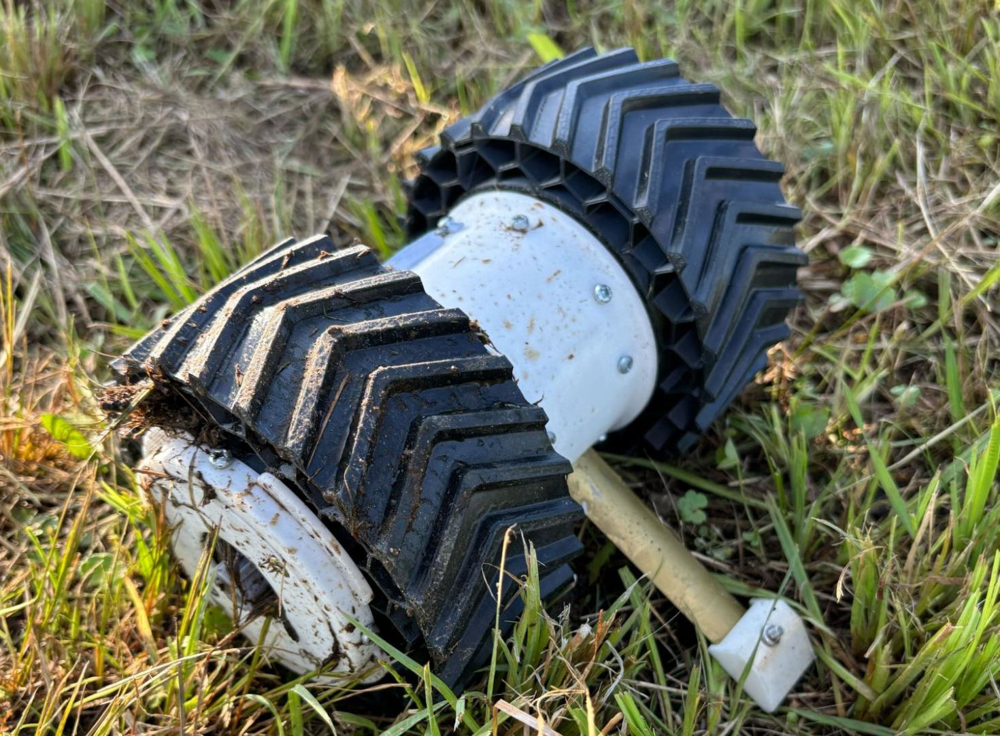
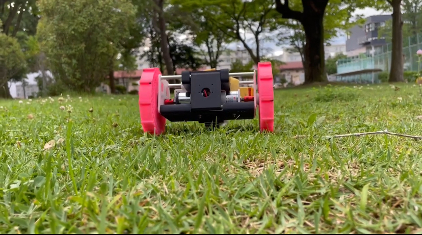
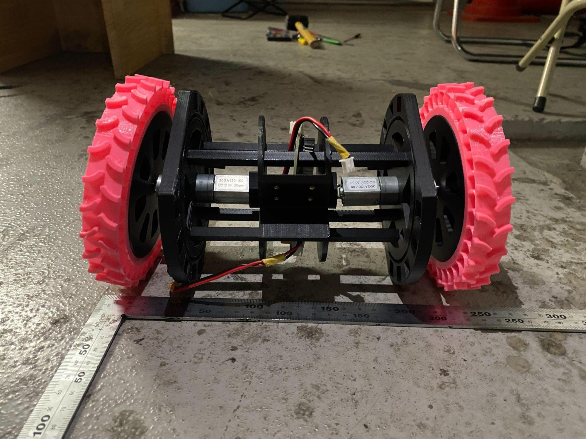
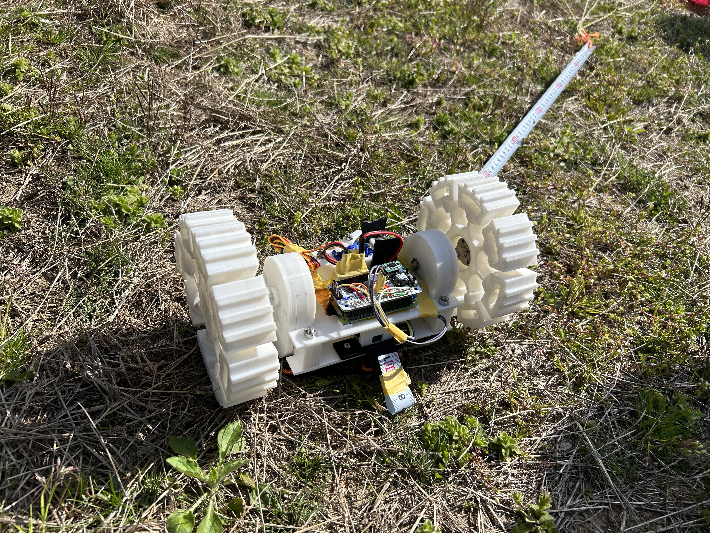
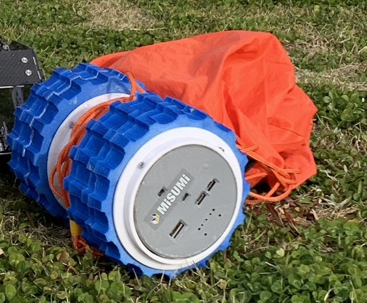
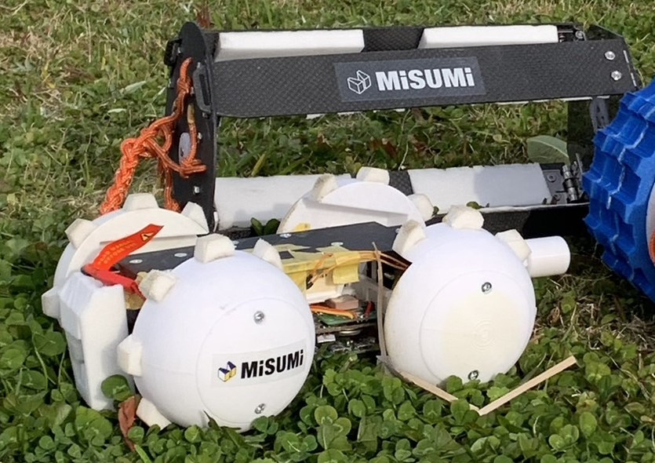
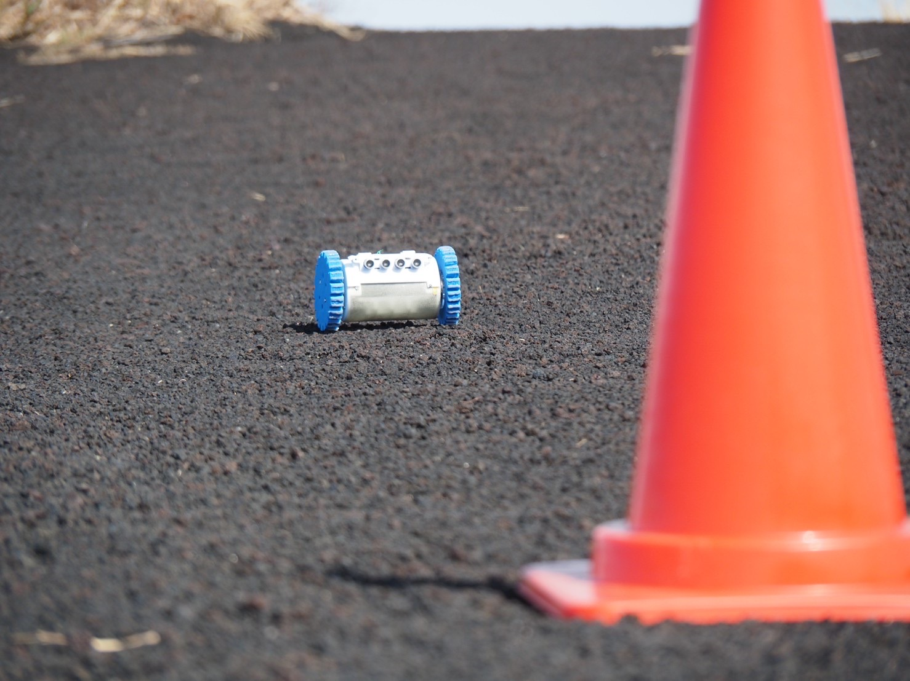
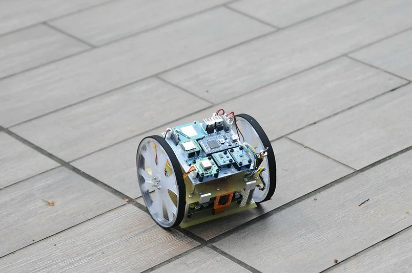
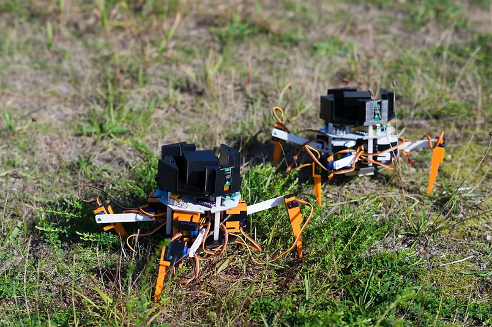

cansat project
カンサットとは、一定のレギュレーションに則った超小型の人工衛星模擬モデルです。宇宙空間に打ち上げられる衛星と同様の機能、すなわちマイコン、センサ、通信系、アクチュエータを持ちます。 開発したカンサットは気球やドローン、ロケットを用いて投下し定められたミッションを行い、データを取得します。カンサットの開発によって機械加工、回路設計からプロジェクトマネジメントまでものづくりの基礎を学ぶことができます。 F.T.E.ではハイブリッドロケットの開発に比較し自由度が高いカンサットの開発によって、部員の技術力の向上が見られています。日本国内ではカンサットの共同実験として能代宇宙イベントと種子島ロケットコンテストがあげられ、F.T.E.は2016年度から前者に参加しています。能代宇宙イベントのカンサット競技には「ランバック」「フライバック」「ミッション」の3部門があり、2017年度は3部門全てに参加しました。

Fist-ランバック部門出場
B3世代が製作した最初で最後の機体。当該機体の名称もFirstとLastをかけてある。これまでの世代で培ってきたCanSatの開発技術をもとに設計を再考し、最高のB3世代の機体に仕上げることができた。
ちなみにfistは拳という意味もあるが、サブキャリアにはCFRPを、ボディチューブにはGFRPを用いることで、文字通り強い機体になっている。
当該機体は、パラシュートの開傘には成功し目立った損傷なく着地したが、サブキャリア機構が展開する見込みが見られなかったため、走行不能と判断し、リタイアという結果となった。

SAKURA-ランバック部門出場
2024年4月の新潟大学NiCsとの共同投下実験のために製作したCanSatの反省を生かした機体。十分なトルク確保、軽量化と剛性、整備性の向上を目指して設計した。モーターの選定には苦労したが、これからのプロジェクトでも当該機体のアップデートを重ねていけるような、簡素で高性能な機体に仕上げることができた。
当該機体の結果は、パラシュートの開傘には成功したものの、着地後反転ないし横転して動くことはなかった。

MORIMORI-ランバック部門出場
『SORA-Q（ソラキュー）』にインスパイアされ、実践的な月面探査を想定した機体。野心的な設計を盛りに盛り込んだMORIMORIだが、当該機体の目玉は、機体が乗り切ることができない障害物に出くわしても良いように、触覚機構を搭載した点だ。触角が障害物を感知すると障害物を回避するようプログラムされている。
当該機体の結果は、機体着地時に反転ないし横転して動くことはなかった。

Himmel-ランバック部門出場
新潟大学NiCs新人大会に向けて、14期が初めて製作した機体。主に14期の技術確立のために作られた。遠隔操作、自立走行どちらも行うこと前提にした機体。14期CanSat開発の礎となる。結果はパラ分離までは成功したがモーターのパワーが足りないため走行開始できずリタイヤ。

IG-Normal mk.3-自律制御カムバック部門出場
2024年種子島ロケットコンテストに向けて、12期が最後に製作した機体のひとつ。これまで培ってきた内歯車機構の集大成だ。地球外での探査を真剣に考え、GPSに頼らない制御に向けた第一歩を踏み出した。本機体はダミードローンとローバーに分離する。ダミードローンでは、落下時に空撮を行った。ゆくゆくは実際に飛行させ、空からローバーをゴールまで誘導していく。ローバーは駆動に内歯車機構を採用して耐衝撃性と省スペース化を図り、350mlのジュース缶ほどのサイズまで小型化に成功した。
投下の結果、ダミードローンとローバーの分離に失敗し、リタイア。

Go-4WarD-自律制御カムバック部門出場
2024年種子島ロケットコンテストに向けて、12期が最後に製作した機体のひとつ。これまでの失敗から学び、耐衝撃性を向上させ、地道に前へ進むことを目指した機体。Can
Satでは珍しく、4輪型となっている。
着地後は問題なく走行し、ゴールに接近することができたが、GPSの取得に問題が生じてしまい、リタイア。

IG-Normal mk.2-ランバック部門出場
2023種子島ロケットコンテスト出場のIG-Normalの二号機。前回機体の反省であったパラシュートに機体が包まれるという問題解決のためにショックコードをコンベックスで製作する改善を行った。また、内部構造に関しては、二段展開式スタビライザーやCFRP製パラシュート分離機構などの新しい機構に加えて、耐衝撃性向上とタイヤ回転軸の剛性強化のためにボディーチューブにCFRPチューブを使用した。制御系に関しても、いままでのSBCとは異なり、マイクロコンピュータであるraspberry pi picoを用いるという新たな取り組みにより、より安価でよりシンプルな構成でE2Eを実現することができた（実験の段階で）。 投下の結果、パラシュート分離、地磁気補正、GPSによるゴールへの接近が成功したものの、走行途中で内部のPLA製ヘリカルギアが外部の気温とモーターからの発熱により軟化したことで空回りし、8m22cmでリタイア。

IG-Normal-自律制御カムバック部門出場
2023種子島ロケットコンテスト出場機体。あらたな駆動機構として内歯車機構を用いた機体。機体内部に固定されたモーターによって回転するヘリカルギアをタイヤに固定させた内歯車と嚙合わせることにより駆動する。この機構には、機体内部のスペースを有効活用できること、衝撃を緩和できること、単純な機構で高いギヤ比を得られることなどの利点がある。 投下の結果、機体は破損しなかったものの、パラシュートにくるまったことで分離が失敗し、リタイア。

4WarD-自律制御カムバック部門出場
2023種子島ロケットコンテスト出場機体。4輪駆動の缶サット。缶サットのレギュレーションは円柱に設定されており、レギュレーションを満たした4輪駆動の缶サットを製作することは難しいが、本機体は各タイヤを縮んだ状態から展開できるような機構を搭載することでその問題を解決している。また、この機構を用いることで旋回性が上がり、4輪駆動の短所を克服している。さらに、CFRP製サブキャリアに格納することで着地衝撃を緩和することができる。 投下の結果、着地誤検知により空中でサブキャリアが展開してしまい、内部の弱い構造のまま着地衝撃を受けたことで機体破損、リタイア。

Kazami-ランバック部門出場
2022年の伊豆大島共同打ち上げ実験に向けて12期代が作成した機体。超音波センサによるゴール検知を目指す。ゴールからの距離は17cm。12期代の技術力を高めることができた。

Visionary -ランバック部門
ミッションステートメントは「確実に走行を開始できる自立型ローバーを開発し、団体内の技術確立を目指す」。今後の缶サット開発がより円滑・効率的に進められるように、缶サットの要素技術の取得とプロジェクトマネジメント手法を検討・確立したうえで、4年目以降の缶サット開発の指針とすることを意図して開発した。機体名Visionaryは,その理念に基づき決定された。結果は、2回の投下とも、落下時に破損し走行不能でリタイア。

Penguins-ミッション部門
2機の四脚歩行型Cansatをほとんどのパーツを3Dプリンターで製作し、移動対象物を2機で協力して運ぶというミッションに挑戦。機体は投下されるとそれぞれパラシュートで減速降下して着地後にたたまれていた脚を展開し、パラシュートを切り離す。その後、9軸センサと画像認識を用いて移動対象物まで移動し、2つの機体で移動対象物を左右から挟み込んで新たな目標地点まで運ぶ。結果は、2機ともパラシュートが無事開傘して無事に減速降下したものの、着地の衝撃で片方の機体は脚のパーツのサーボモータが破損し、もう一方の機体は落下の衝撃でソフトウェアリセットがかかり、結果的に2機とも着地した地点から動くことができなかった。
Contact
メールにてお気軽にお問い合わせください。